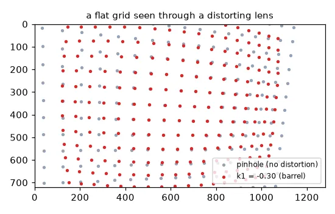
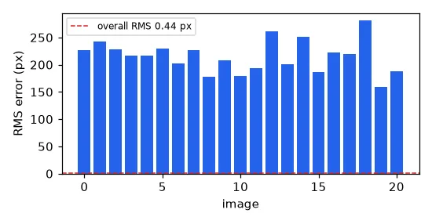
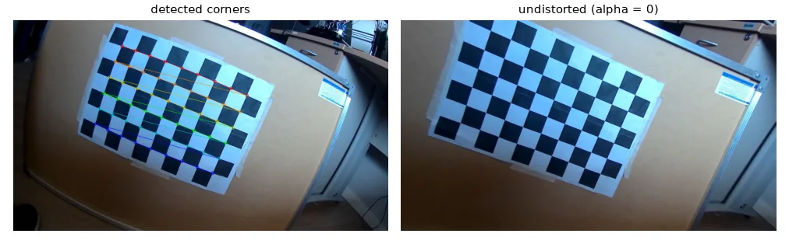
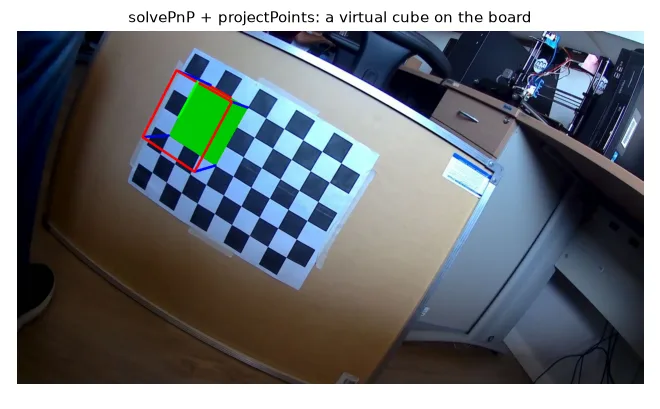

From the world to a pixel#
Every measurement we want to make in 3-D — a distance, a pose, a map — depends on knowing exactly how the camera turns rays into pixels. The pinhole model does it in four steps:
- Extrinsics — express the world point in the camera frame: \(\mathbf{X}_c = R\,\mathbf{X}_w + \mathbf{t}\).
- Perspective division — project on the normalised image plane: \(x = X_c / Z_c\), \(y = Y_c / Z_c\).
- Lens distortion — real lenses bend straight lines. The Brown–Conrady model, with \(r^2 = x^2 + y^2\): $\(x_d = x\,(1 + k_1 r^2 + k_2 r^4 + k_3 r^6) + 2 p_1 x y + p_2 (r^2 + 2 x^2)\)$ (and symmetrically for \(y_d\)). \(k_i\) are radial terms (barrel when \(k_1 < 0\)), \(p_i\) tangential ones.
- Intrinsics — from metric to pixels with the matrix $\(K = \begin{bmatrix} f_x & s & c_x \\ 0 & f_y & c_y \\ 0 & 0 & 1 \end{bmatrix}, \qquad \begin{bmatrix} u \\ v \\ 1 \end{bmatrix} = K \begin{bmatrix} x_d \\ y_d \\ 1 \end{bmatrix}\)$ \(f_x, f_y\) are the focal length in pixels, \((c_x, c_y)\) the principal point, \(s\) the skew (≈ 0).
def project_points(X, K, R, t, dist=(0, 0, 0, 0, 0)):
"""World points (N x 3) -> pixels (N x 2), with the Brown-Conrady distortion model."""
k1, k2, p1, p2, k3 = dist
Xc = X @ R.T + t # 1. world -> camera frame (extrinsics)
x, y = Xc[:, 0] / Xc[:, 2], Xc[:, 1] / Xc[:, 2] # 2. perspective division (normalised plane)
r2 = x ** 2 + y ** 2 # 3. lens distortion
radial = 1 + k1 * r2 + k2 * r2 ** 2 + k3 * r2 ** 3
xd = x * radial + 2 * p1 * x * y + p2 * (r2 + 2 * x ** 2)
yd = y * radial + p1 * (r2 + 2 * y ** 2) + 2 * p2 * x * y
u = K[0, 0] * xd + K[0, 1] * yd + K[0, 2] # 4. intrinsics: metric -> pixels
v = K[1, 1] * yd + K[1, 2]
return np.stack([u, v], axis=1)
This 15-line function gives exactly the same pixels as cv2.projectPoints (max difference 0.0 px).

Calibration = inverting the model#
Calibrating means finding \(K\) and the distortion coefficients (plus a pose per image) from images of an object whose geometry we know exactly: a chessboard. Its inner corners are, in the board's own frame, at \((i \cdot s, j \cdot s, 0)\). Zhang's method (2000) gets a first estimate from the homographies between the board and each image, then refines everything by minimising the reprojection error — the distance between the detected corners and the corners projected by the model.
1. Detect the corners#
PATTERN = (9, 6) # inner corners per row and per column (not squares!)
SQUARE = 1.0 # square side; use real units (e.g. 0.025 m) to get metric extrinsics
objp = np.zeros((PATTERN[0] * PATTERN[1], 3), np.float32)
objp[:, :2] = np.mgrid[0:PATTERN[0], 0:PATTERN[1]].T.reshape(-1, 2) * SQUARE # z = 0 plane
criteria = (cv2.TERM_CRITERIA_EPS + cv2.TERM_CRITERIA_MAX_ITER, 30, 0.001)
object_points, image_points, used = [], [], []
for fname in sorted(glob.glob(str(U.path("calibration/*.jpg")))):
gray = cv2.cvtColor(cv2.imread(fname), cv2.COLOR_BGR2GRAY)
found, corners = cv2.findChessboardCorners(gray, PATTERN)
if not found:
continue
corners = cv2.cornerSubPix(gray, corners, (11, 11), (-1, -1), criteria) # sub-pixel accuracy
object_points.append(objp)
image_points.append(corners)
used.append(fname)
image_size = gray.shape[::-1] # (width, height)
Inner corners, not squares
A board with 10 × 7 squares has 9 × 6 inner corners: PATTERN = (9, 6). Getting this wrong makes findChessboardCorners fail silently on every image.
cornerSubPix (lesson 11) is not optional: calibration is only as accurate as the corners.
2. Calibrate#
rms, K, dist, rvecs, tvecs = cv2.calibrateCamera(object_points, image_points, image_size, None, None)
print("RMS reprojection error: %.3f px" % rms)
print("K =\n", K.round(2))
print("dist (k1, k2, p1, p2, k3) =", dist.ravel().round(4))
chessboard found in 21 images of size (1280, 720)
RMS reprojection error: 0.438 px
K =
[[780.61 0. 725.46]
[ 0. 787.5 365.94]
[ 0. 0. 1. ]]
dist (k1, k2, p1, p2, k3) = [-0.4282 0.2407 0.0013 -0.0013 -0.0992]
These are the parameters of my webcam: a wide-angle lens with strong barrel distortion (\(k_1 = -0.43\)). An RMS error below 0.5 px is a good calibration.
3. Check every view#
per_view = []
for objp_i, imgp_i, r, t in zip(object_points, image_points, rvecs, tvecs):
projected, _ = cv2.projectPoints(objp_i, r, t, K, dist)
per_view.append(np.sqrt(np.mean(np.sum((projected - imgp_i) ** 2, axis=2))))

Taking good calibration pictures
15–25 images; the board flat and sharp; cover the whole field of view, especially the corners where distortion is strongest; tilt the board up to ±45° in different directions; vary the distance. If you only show the board in the centre, \(k_1, k_2, k_3\) are poorly constrained.
Undistorting#
img = cv2.imread(str(U.path("calibration/frame3.jpg")))
new_K, roi = cv2.getOptimalNewCameraMatrix(K, dist, image_size, alpha=0) # alpha=0: crop black borders
undistorted = cv2.undistort(img, K, dist, None, new_K)
# for video, build the maps once and remap every frame (much faster)
map1, map2 = cv2.initUndistortRectifyMap(K, dist, None, new_K, image_size, cv2.CV_16SC2)
undistorted_fast = cv2.remap(img, map1, map2, cv2.INTER_LINEAR)
alpha chooses between keeping only valid pixels (0, cropped) and keeping every source pixel (1, black borders).

Pose estimation: solvePnP#
Once \(K\) is known, the pose of the board in any new image follows from its 2-D/3-D correspondences: this is the Perspective-n-Point problem.
view = used.index(str(U.path("calibration/frame4.jpg")))
_, rvec, tvec = cv2.solvePnP(objp, image_points[view], K, dist) # board pose in this image
s = 3 * SQUARE
cube = np.float32([[0, 0, 0], [s, 0, 0], [s, s, 0], [0, s, 0],
[0, 0, -s], [s, 0, -s], [s, s, -s], [0, s, -s]]) # -z points towards the camera
pix, _ = cv2.projectPoints(cube, rvec, tvec, K, dist)
pix = pix.reshape(-1, 2).astype(int)
ar = cv2.imread(used[view])
cv2.drawContours(ar, [pix[:4]], -1, (0, 200, 0), -1)
for i, j in zip(range(4), range(4, 8)):
cv2.line(ar, tuple(pix[i]), tuple(pix[j]), (255, 0, 0), 3)
cv2.drawContours(ar, [pix[4:]], -1, (0, 0, 255), 3)
cv2.drawFrameAxes(ar, K, dist, rvec, tvec, 2 * SQUARE, 3)

Saving the result#
fs = cv2.FileStorage("camera_calibration.yaml", cv2.FILE_STORAGE_WRITE)
fs.write("camera_matrix", K)
fs.write("distortion_coefficients", dist)
fs.write("image_size", np.array(image_size))
fs.release()
fs = cv2.FileStorage("camera_calibration.yaml", cv2.FILE_STORAGE_READ)
K_loaded = fs.getNode("camera_matrix").mat()
fs.release()
The YAML written by cv2.FileStorage is the format of the calibration files in lessons 15–17 and in ORB-SLAM3.
Bonus: does calibration find the truth?#
To know whether calibration recovers the real parameters, we need a camera whose parameters we know: simulate one. We project the chessboard with a chosen \(K\) and distortion from 15 random poses, add 0.2 px of noise, and calibrate:
# Bonus: a camera we *know*, so we can check that calibration recovers it.
rng = np.random.default_rng(1)
K_true = np.array([[900, 0, 640], [0, 900, 360], [0, 0, 1]], float)
dist_true = np.array([-0.25, 0.08, 0.0, 0.0, 0.0])
obj_s, img_s = [], []
for _ in range(15):
rvec = rng.uniform(-0.5, 0.5, 3)
tvec = np.array([rng.uniform(-3, -1), rng.uniform(-2, 0), rng.uniform(9, 14)])
pts, _ = cv2.projectPoints(objp.astype(float), rvec, tvec, K_true, dist_true)
pts += rng.normal(0, 0.2, pts.shape) # 0.2 px of detection noise
obj_s.append(objp)
img_s.append(pts.astype(np.float32))
rms_s, K_est, dist_est, _, _ = cv2.calibrateCamera(obj_s, img_s, (1280, 720), None, None)
synthetic: fx true 900 -> 901.3, k1 true -0.25 -> -0.252, k2 true 0.08 -> 0.083 (RMS 0.28 px)
The focal length is recovered within 0.15% and the distortion within a few thousandths — and the RMS error equals the noise we injected (\(0.2\sqrt{2} \approx 0.28\) px), the sign of a model that fits perfectly.
Exercises#
- Calibrate with only the 5 views where the board is closest to the centre. How do \(k_1, k_2, k_3\) change?
- Calibrate your own phone or webcam (print a chessboard, use
cv2.VideoCapture(0)and press a key to save frames). - In the synthetic bonus, increase the noise to 1 px and the number of views to 50. How does the error on \(f_x\) scale?